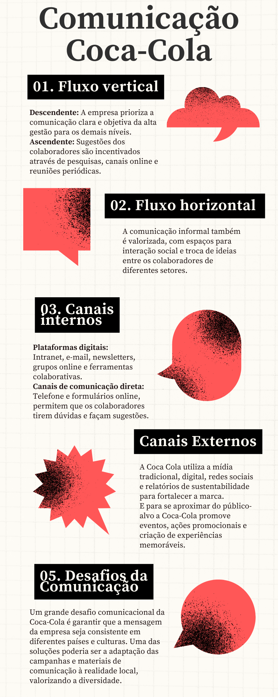

Comunicação - Coca Cola
Portfólio.
A Coca-Cola, com seus produtos mundialmente famosos, busca atender a um público amplo e diverso.
Para alcançar essa abrangência, a marca oferece opções como versões diet e sem açúcar, direcionadas a um público que busca controlar o peso ou possui diabetes, como adultos mais velhos. Além disso, a variedade de tamanhos das embalagens permite atender a diferentes necessidades, desde o consumo individual até grandes reuniões familiares, considerando as realidades de diferentes faixas de renda.
Abaixo estão alguns dos principais produtos do grande portifólio que a marca detém:

Coca-Cola: possui um público-alvo amplo e diverso, que abrange pessoas de diferentes idades, classes sociais, estilos de vida e interesses.
Sprite: O público-alvo da Sprite aprecia o sabor cítrico e refrescante da bebida. A Sprite se concentra principalmente em jovens entre 18 e 24 anos.

Fanta Laranja: Adolescentes e jovens adultos, o público se identifica com a comunicação vibrante e irreverente da marca, e aprecia o sabor refrescante e açucarado da bebida.

Schweppes Citrus: Esse público busca bebidas com sabor mais complexo e refinado, apreciando as notas cítricas e o leve amargor da Schweppes Citrus. Faixa etária entre 25 e 55 anos.
Nossa história.
Em 1886, na cidade de Atlanta, EUA, o farmacêutico John Pemberton deu vida à Coca-Cola, inicialmente um tônico medicinal.
A produção que a princípio era artesanal sugeria um número limitado de funcionários. Sua expansão é marcada por estratégias inovadoras, como cupons e garrafas icônicas, e adaptabilidade, ajustando-se às culturas e preferências locais. Hoje, a companhia conta com mais de 700 mil colaboradores em 2024, demonstrando um crescimento impressionante. A marca se dedica a refrescar o mundo e fazer a diferença através de seus produtos, promovendo a alegria e o bem-estar das pessoas.
A Coca-Cola busca alcançar essa missão com liderança, paixão e responsabilidade, sempre norteada por seus valores fundamentais: trabalho em equipe, integridade e sustentabilidade. Um exemplo disso é o compromisso da empresa com a sustentabilidade, investindo em embalagens recicláveis e reduzindo o impacto ambiental de suas operações.
Fundadores.
Juntos, Pemberton e Candler lançaram as bases para a jornada extraordinária da Coca-Cola, que continua a moldar a história da indústria de bebidas até hoje.

John Pemberton
Inventor
John Stith Pemberton foi um farmacêutico e inventor estadunidense responsável por ser o criador da fórmula da Coca-Cola.

Asa Candler
Designer
Asa Griggs Candler foi um magnata dos negócios que fez a maior parte de sua fortuna comprando a fórmula da Coca-Cola.
Comunicação Empresarial
Fluxo comunicacional
A cultura e a comunicação organizacional da Coca-Cola seguem um modelo moderno, onde ideias e opiniões fluem livremente seja verticalmente (cima para baixo e de baixo para cima) ou horizontalmente (entre diferentes áreas); independentemente da hierarquia, os líderes são instruídos a ouvir e considerar as sugestões de todos os funcionários ao tomar decisões.
Canais de comunicação internos
Os líderes da Coca-Cola implementaram canais de comunicação eficazes que permitem o fluxo livre de mensagens entre a gerência e os funcionários. Esses canais incluem mecanismos internos como ramais telefônicos, intranet, sistemas de e-mail, murais de avisos e reuniões. O fluxo de mensagens é controlado de acordo com a importância da mensagem e o destinatário pretendido, garantindo que chegue apenas às partes envolvidas.
Canais de comunicação externos
Redes sociais (Instagram, Facebook, Twitter, YouTube, TikTok) Publicidade online e offline Relações públicas Eventos e patrocínios Marketing de influência Conteúdo digital (blog, site) Relatórios de sustentabilidade. A Coca-Cola utiliza esses canais de forma estratégica e integrada para se conectar com o público global, construir uma marca forte e alcançar seus objetivos de negócio.
Desafios e soluçoes
Alinhamento global: garantir que a mensagem da empresa seja consistente em diferentes países e culturas. Solução: adaptação das campanhas e materiais de comunicação à realidade local, valorizando a diversidade.
Comunicação interna eficaz: alcançar todos os colaboradores, mesmo em uma empresa com alta rotatividade. Solução: diversificar os canais de comunicação, investir em treinamento e feedback e criar uma cultura de comunicação aberta. Gerenciamento de crises: responder de forma rápida e eficiente a situações negativas que afetem a imagem da empresa. Solução: ter um plano de comunicação em crise bem definido, com porta-vozes treinados e canais de comunicação ágeis. Medição do impacto da comunicação: avaliar a efetividade das ações e otimizar as estratégias. Solução: utilizar ferramentas de análise de dados e monitorar indicadores de desempenho (KPIs).
Notícia
16/10/2023
Thaís Moraes assume comunicação da Coca-Cola
Nova Head Brasil e Cone Sul
A The Coca-Cola Company anuncia Thaís Moraes como nova head de comunicações na Coca-Cola Brasil e Cone Sul (Chile, Argentina, Paraguai, Uruguai e Bolívia). Com mais de 20 anos de experiência em comunicação corporativa e responsabilidade social, a executiva já atuou em empresas multinacionais na área de embalagens para bebidas. Em sua nova função, Thaís se concentrará em impulsionar estratégias de comunicação para engajamento dos funcionários, reputação da marca, liderança de pensamento ESG e visibilidade dos produtos, além de dar suporte a todo o Sistema Coca-Cola, formado por sete fabricantes. A head é graduada em jornalismo, com MBA em gestão e desenvolvimento de negócios, MBA em marketing e branding, além de especialização em recursos humanos. No novo cargo, Thaís substituirá Daniela Valverde, que assumiu a posição global de gerente sênior de comunicação de sustentabilidade, em Atlanta, Estados Unidos, onde fica a sede da companhia.Parafrase:
Com base na nomeação de Thaís Moraes como a nova head de comunicações da Coca-Cola Brasil, podemos inferir que a empresa valoriza a área de comunicação e está comprometida em impulsionar estratégias para impulsionar a reputação da marca, liderança de pensamento e o engajamento dos funcionários.Contato
Aqui estão os canais oficiais do atendimento Coca-Cola: